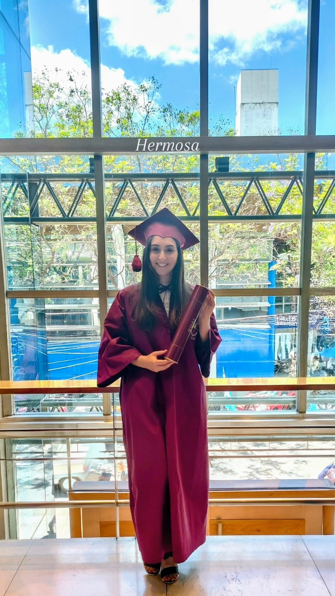

Un poco sobre mi

Licenciada en Psicopedagogia
Esta diplomatura me permitió formarme para acompañar a cada persona en su proceso de aprendizaje, entendiendo que todos aprendemos de manera diferente. A lo largo de la formación incorporé herramientas para detectar dificultades, potenciar habilidades y brindar un acompañamiento respetuoso, adaptado a las necesidades de cada niño, adolescente o adulto. El enfoque está puesto en escuchar, comprender y ayudar a que cada uno pueda desarrollar su máximo potencial en un entorno de confianza.